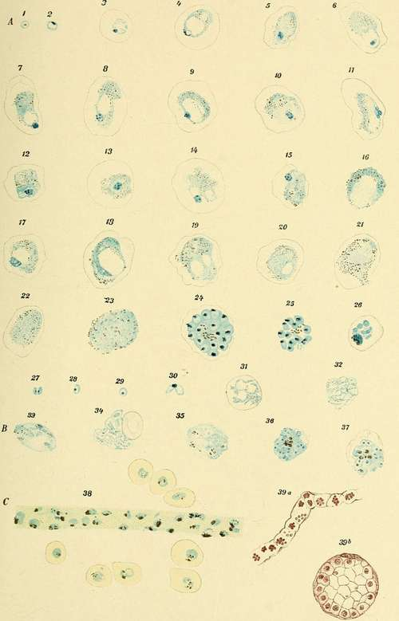

Special Characteristics Of The Individual Species Of Parasites. . Part 7
Description
This section is from the book "Malaria, Influenza And Dengue", by Julius Mennaberg and O. Leichtenstern. Also available from Amazon: Malaria, influenza and dengue.
Special Characteristics Of The Individual Species Of Parasites. . Part 7
After the course of two or three weeks paroxysms of fever may again occur, accompanied by the invasion of young ameboid organisms.
The question at once proposes itself, What organism is to be considered the source of the infection latent for so long a time? The most ready answers would make the crescents responsible for the relapse, and this is not improbable. In order to make this probability certain it is necessary to demonstrate that crescents or spheres of that order may give rise to spores capable of developing into ameboid organisms.
As mentioned previously, Canalis believed that he observed spore formation in several spheres. Unfortunately, he did not demonstrate, by nuclear staining, that the bodies were actually spores, and his assertions may, therefore, be questioned.
The early opinion of Celli and Guarnieri that the well known " buds"
("Knospen") on the spheric organisms are spores is disposed of on account of the absence of nuclei. The statement of Grassi and Feletti that they found spore forming spheres (of crescents) in the splenic blood is questionable, at least judging from the drawings which they made of these bodies.
Feletti recently observed on some crescents from one to eight nuclear like bodies, which he considered to be gymnospores. I personally am not absolutely convinced of the sporulation of crescents, yet I can affirm that segmentation, as first described by Grassi and Feletti, undoubtedly occurs, and I consider it possible that this segmentation, during which the individual organisms assume a finely granular appearance, has a connection with reproduction, though it must be confessed that this cross segmentation is a rare occurrence. [For further observation on this point, viz., parthenogenesis of gametes, see page 121.-Ed.]
The statements in regard to the increase or decrease of the crescents in the apyretic intervals and in the course of a relapse are not in accord, for while one set of observers claim a diminution in number, others affirm an increase or no change. Personally I have seen no striking, or at least no regular, differences, for it happens that on one day numerous bodies of this class are found, and on the next day only isolated ones, without any alteration having occurred in the patient. Moreover, the observation of several writers that crescents are transformed into flagellate spheres more frequently at the time of the relapse than during the apyretic period I have not been able to confirm.
In stained preparations the young quotidian parasite shows similar characteristics to the young forms of the tertian and quartan organisms, possessing, like them, a nucleus, nucleolus, and plasma.
The Unpigmented Quotidian Parasite
The occurrence of a malarial parasite that forms no pigment and that, therefore, sporu lates in a non pigmented condition has been proved by Marchiafava and Celli. This is one of the greatest contributions of these two active and tireless investigators as to the etiology of malaria . These non pigmented parasites have since then been repeatedly observed by other investigators, as Marchoux, in Senegal.
Excepting that they do not contain pigment, these parasites resemble so closely the pigmented quotidian parasites that we may omit a detailed description of them. In the young condition they show the same ameboid movement. They complete their life cycle in a similar or possibly somewhat shorter period, to which circumstance Marchiafava and Celli refer the lack of pigment.
Sporulation takes place only in the internal organs, and an infection must be especially severe before the sporulation forms appear in the peripheral blood. Marchiafava and Celli report one case of comatose pernicious fever in which the peripheral blood also contained very numerous sporulation forms.
Description Of Plate VII
A, Figs. 1 to 32. Ordinary tertian parasites stained by Mannaberg's method
(picric acid and hematoxylin).
B, Quinin forms.
C, Fig. 38. Capillary of the brain containing pigmented parasites of the second group (from a preparation by Prof. Celli). Fig. 39. Capillary of the brain containing non pigmented sporulating parasites of the second group (from a preparation by Prof. Celli).
PLATE VII.
Plate VII, Fig. 39, shows a brain capillary packed with sporulation forms of non pigmented parasites; Fig. 39, b, represents a brain capillary in cross section, showing the infected blood corpuscles lying along the vessel wall in such a way as to narrow the lumen of the vessel. These preparations were taken from a case of comatose pernicious fever. I am indebted for them to the kindness of Professor Celli.
Crescents occur here the same as with the pigmented quotidian parasites. Even in these cases, therefore, we find, after the course of several days, pigmented elements, for the crescents are without exception pigmented. Still, if the patient succumbs before the crescents appear, we have then to do with a completely pigmentless malaria . Marchiafava and Celli have actually observed such cases.
Antolisei and Angelini have frequently found pigmented organisms in the spleen, brain, and bone marrow in cases where the finger blood showed exclusively non pigmented parasites. It is, therefore, wrong to deny absolutely the existence of pigmented organisms from an examination of the blood from the finger, for these may be retained in the internal organs. With this restriction-no puncture of the spleen was done-I detail the anamnesis of a case of infection by non pigmented quotidian parasites:
D. J., aged nineteen, woodcutter, states that he has suffered for eight days from a continuous fever; no chills were perceived. Intense headache, pain in the limbs, and for these eight days constipation.
August 12, 1892, 10 a. m. : Temperature, 39.5°, patient groaning under the severe prostration. Tongue dry and fissured, spleen just palpable.
Blood examination: Numerous small ameboid non pigmented organisms.
4 p. m. : Temperature, 40.2°.
Blood examination: 1. Very many non pigmented organisms in torpid movement. Frequent double infection of the blood corpuscles. 2. In isolated leukocytes large pigment granules.
Continue to:
- prev: Special Characteristics Of The Individual Species Of Parasites. . Part 6
- Table of Contents
- next: Special Characteristics Of The Individual Species Of Parasites. . Part 8
Tags
mosquito, malaria, influenza, dengue, symptoms, outbreaks, diseases, hemoglobinuria, infections